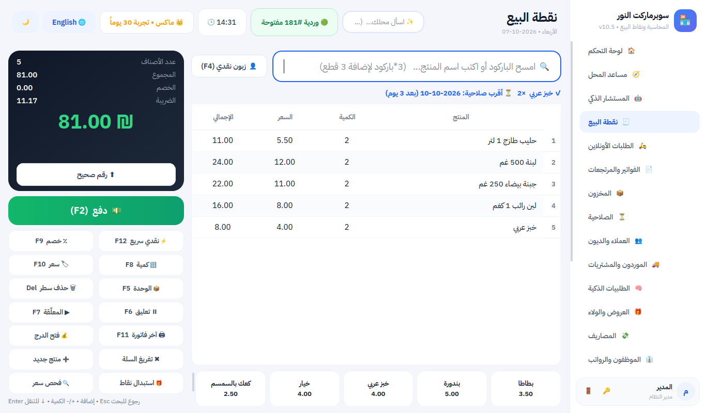
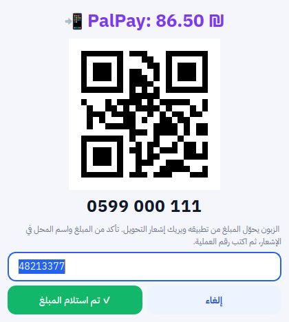
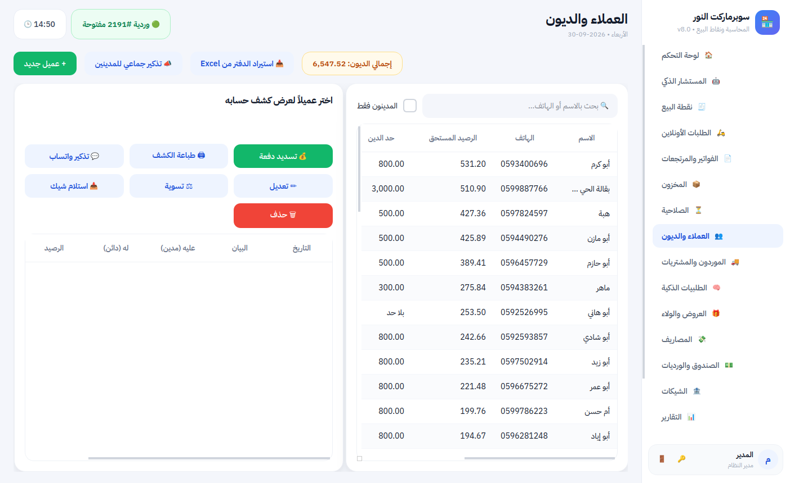
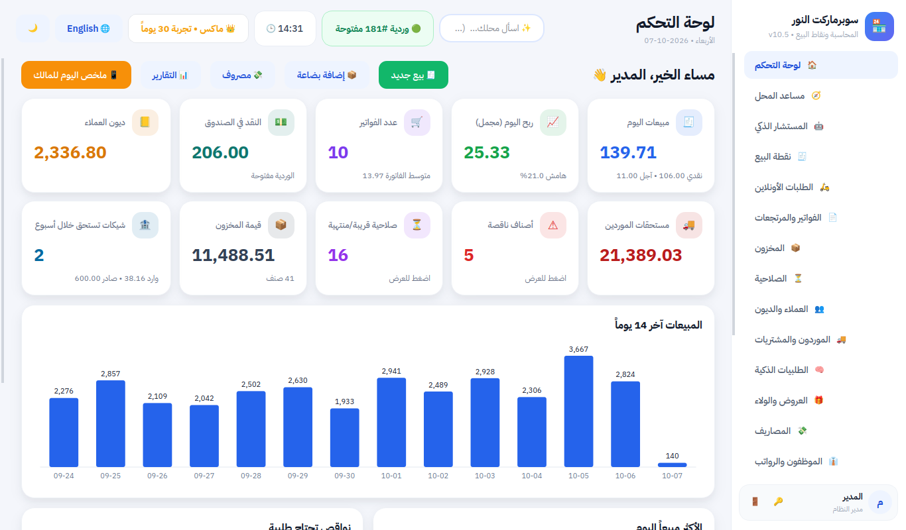
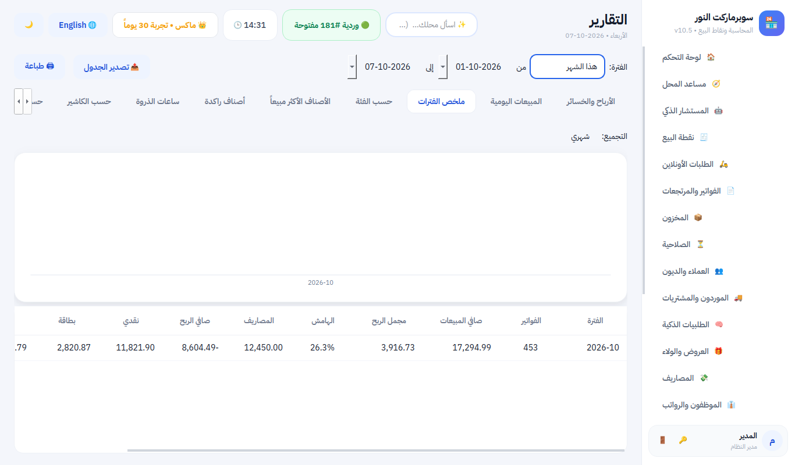
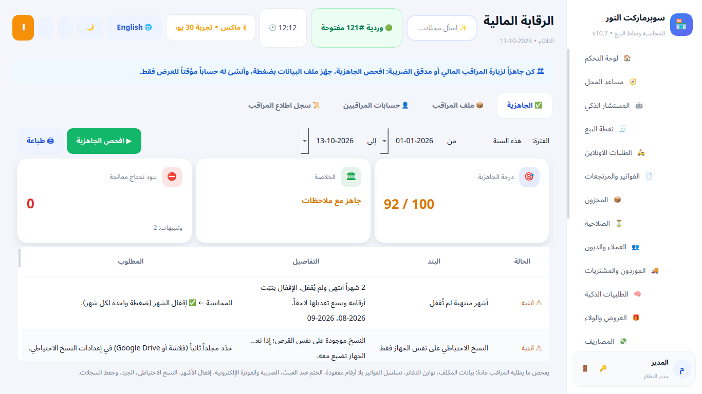
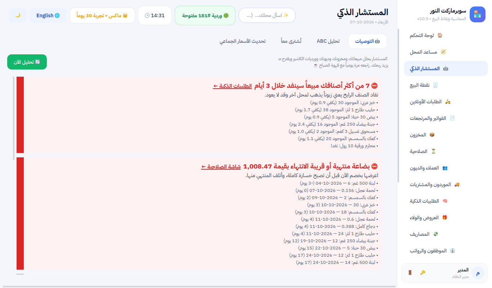
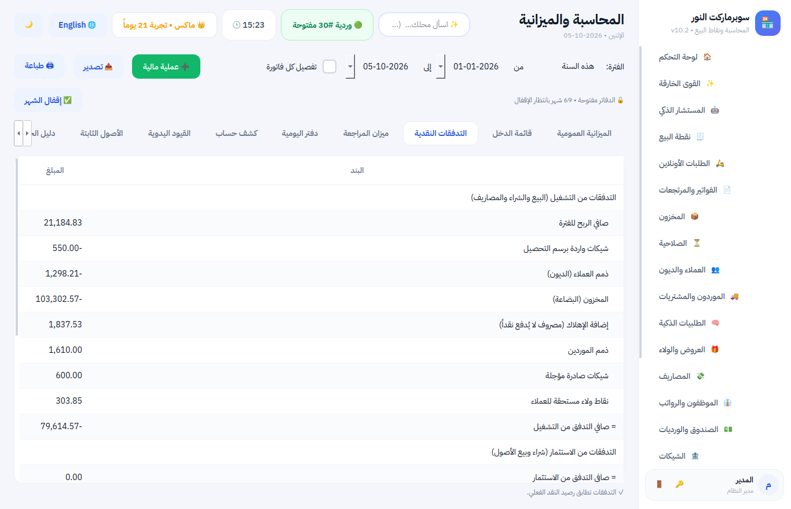

مزايا البرنامج
برنامج بيع ومحاسبة لمحلك: يعمل بدون إنترنت، يبيع بسرعة، يتذكر الديون والشيكات والصلاحية عنك، ويقول لك كل يوم كم ربحت فعلاً — وتسأله بلهجتك فيجيبك من أرقامك.
4 باقات: 🌱 مجاني للأبد • ⚡ بلس • 💎 برو • 👑 ماكس — وأول شهر ماكس كامل مجاناً. انظر الباقات والمقارنة مع المنافسين.

🧾 البيع
- بيع سريع بالباركود أو بالاسم، و
3*لإضافة عدة قطع مرة واحدة. - الميزان: يقرأ الوزن والسعر من ملصق الميزان. وأزرار سريعة للأصناف بلا باركود (خبز، خضار).
- الحبة والكرتونة بباركود وسعر لكل منهما.
- الدفع نقداً أو بطاقة أو محفظة إلكترونية وتطبيق بنكي أو آجل، أو بعملة أخرى، أو مختلط، مع حساب الباقي.
- جاهز للربط مع جهاز البطاقة البنكي: المبلغ ينتقل للجهاز تلقائياً ويُطبع رقم الموافقة على الإيصال.
- العروض (اشترِ 2 واحصل على 1، 3 بـ 10، خصم على فئة) تُطبَّق وحدها.
- نقاط ولاء للزبائن الدائمين، وأسعار جملة لتجار الجملة.
- تعليق الفاتورة وخدمة زبون آخر، فحص السعر، إعادة طباعة آخر فاتورة.
- إيصال بشعار محلك، ورمز QR للفاتورة الضريبية إن احتجته.
- ⬆ فاتورة بلا كسور: تقريب الإجمالي لأعلى رقم صحيح بضغطة (أو تلقائياً)، والفرق في حساب مستقل خارج الضريبة، ويُرد مع الإرجاع الكامل.
- الإرجاع بسعر الفاتورة الأصلية حتى لو تغيّر سعر الصنف بعدها، وتغيير السعر عند البيع يُحفظ بسعريه ويراجعه المدقق.
- الفوترة الإلكترونية المرتبطة (اختيارية): «فاتورة» السعودية المرحلة الثانية (توقيع رقمي، سلسلة بصمات، QR المرحلة الثانية، إبلاغ تلقائي) ونظام الفوترة الوطني الأردني JoFotara — والبيع يستمر حتى بلا إنترنت.
- شاشة للزبون تعرض الأصناف والتوفير والباقي، ووضع خاص لشاشات اللمس.
📲 المحافظ الإلكترونية وتطبيقات البنوك
- عرّف مرة واحدة الطرق التي يدفع بها زبائنك (مثل PalPay وJawwal Pay والتحويل البنكي الفوري وCliQ وInstaPay...)، واختر أين يصل المال: رصيد المحفظة أو البنك مباشرة.
- عند الدفع: زر واحد يعرض للزبون رقم حسابك ورمز QR على الشاشة وشاشة الزبون، ويسجّل رقم العملية من إشعاره.
- تقرير المطابقة: مجموع كل طريقة وعملياتها سطراً بسطر لمقارنتها مع كشف المحفظة أو البنك.
- الزبون يسدد دينه بالمحفظة أيضاً، وتحويل رصيد المحفظة للبنك وعمولاتها عمليات جاهزة بضغطة.
- محاسبياً: حساب خاص «المحافظ الإلكترونية» في الميزانية، والدفع الإلكتروني لا يختلط بنقد الدرج.

📦 المخزون والصلاحية
- يبيع الأقرب انتهاءً أولاً، وينبهك قبل انتهاء الصلاحية، ويمنع بيع المنتهي.
- جرد من الكمبيوتر أو من الجوال بكاميرا الباركود.
- استيراد الأصناف من Excel، وطباعة ملصقات الأسعار، وطابور ملصقات يجمع كل صنف تغيّر سعره فلا يبقى على الرف سعر قديم.
- الطلبيات الذكية: البرنامج يحسب ما ينقص حسب سرعة البيع، يرتبه حسب الاستعجال (ما سينفد خلال 3 أيام أولاً)، ويرسل الطلبية للمورد بواتساب.
- مرتجع للمورد، وحركة كاملة لكل صنف.
👥 الديون والشيكات
- دفتر ديون لكل زبون بكشف حساب مطبوع، وحد للدين.
- تذكير واتساب لزبون واحد أو لكل المدينين بضغطة.
- نقل دفتر الديون القديم من Excel في دقيقة.
- الشيكات الواردة والصادرة مع تنبيه قبل الاستحقاق، وإذا رجع الشيك يعود الدين تلقائياً.

💰 الأرباح والمحاسبة
- لوحة تحكم: مبيعات اليوم، الربح، النقد في الدرج، الديون، النواقص.
- الربح الحقيقي بعد التكلفة والمصاريف والتالف وعجز الصندوق.
- ملخص يومي وأسبوعي وشهري وسنوي: المبيعات والربح والمصاريف وطرق الدفع لكل فترة، ومجموعها يطابق تقرير الأرباح بالضبط.
- تقارير: الأكثر ربحاً، الراكد، ساعات الذروة، حسب الكاشير، الدفع الإلكتروني، إقرار ضريبة القيمة المضافة.
- قائمة دخل مقارنة بالفترة السابقة ونسبة التغير، و12 مؤشراً مالياً بشرح بسيط: السيولة، دورة النقد، أيام التحصيل والسداد، نقطة التعادل، كم شهراً يكفيك النقد.
- مطابقة البنك: رصيد كشف البنك مقابل الدفاتر مع المبالغ في الطريق، وتسجيل العمولات بضغطة.
- ميزانية عمومية وميزان مراجعة ودفتر يومية (قيد مبيعات يومي واحد أو قيد لكل فاتورة) جاهزة للمحاسب، بدون أن تحتاج أنت لمعرفة المحاسبة.
- سريع مع سنوات من البيانات: كل التقارير على 3 سنوات من مبيعات سوبرماركت تظهر في أقل من ثانية.


👔 الموظفون والرواتب والأقساط
- الرواتب: راتب شهري لكل موظف، مكافآت وخصومات، سلف تُخصم من الراتب تلقائياً، وقسيمة راتب لأي شهر سابق وكشف كامل للموظف، وسجل الموظفين السابقين محفوظ. كل ذلك في المصاريف والأرباح والصندوق بلا جهد.
- تقسيط ديون الزبائن: جدول أقساط بمواعيد، يتابع المسدَّد والمتأخر وحده، ويذكّر الزبون بقسطه بالواتساب.

🏬 الفروع والسلاسل
كل فرع يعمل باستقلال حتى لو انقطع الإنترنت، والمالك يرى الفروع كلها في تقرير واحد: مبيعات وأرباح ومصاريف ومخزون وديون كل فرع ومجموعها، من مجلد مشترك على Google Drive.

🔎 التدقيق المالي بضغطة زر
- مدقق مالي داخل البرنامج: 47 إجراء تدقيق على كل عملية مسجّلة (وليس على عيّنة): توازن الدفاتر، مطابقة ديون العملاء والموردين والمخزون مع الأستاذ، تسلسل الفواتير بلا أرقام مفقودة، سلامة كل فاتورة.
- كشف التلاعب: بيع ثم إرجاع نقدي سريع من نفس الكاشير، مبيعات خارج ساعات العمل، قفزة مفاجئة في سعر الشراء، زبائن مكررون لتجاوز سقف الدين، رواتب مكررة أو مضخّمة، مرتجع نقدي لفاتورة دُفعت ببطاقة، إشعار تحويل مستخدم مرتين، عجز صندوق يتكرر عند كاشير، خصومات ومرتجعات غير طبيعية، فتح الدرج بلا بيع، مصاريف مكررة، وقانون بنفورد لكشف المبالغ المختلقة.
- أعمار الديون مع مخصص مقترح للديون المشكوك فيها، والبضاعة المنتهية والراكدة، وتقلبات هامش الربح، وتسوية الضريبة، والنسخ الاحتياطي.
- تقرير تدقيق للطباعة برأي (نظيف / متحفظ / سلبي) ودرجة من 100، ولكل ملاحظة إجراء مقترح.

🏛 جاهز لزيارة المراقب المالي ومدقق الضريبة
- حساب مراقب مؤقت للعرض فقط: عند حضور المراقب تنشئ له حساباً بضغطة (اسم الدخول وكلمة مرور تُطبع له)، ينتهي وحده بعد المدة التي تحددها. يطّلع على الدفاتر والفواتير والتقارير على أي جهاز في المحل، وقاعدة البيانات نفسها تُفتح له للقراءة فقط فلا يستطيع تعديل أي شيء حتى لو حاول.
- سجل اطلاع المراقب: كل دخول وكل شاشة وتقرير فتحه بالوقت، في سجل مختوم ضد العبث.
- فحص الجاهزية قبل الزيارة: بيانات المكلف والرقم الضريبي، توازن الدفاتر، تسلسل الفواتير بلا أرقام مفقودة، الختم ضد العبث، الضريبة والفوترة الإلكترونية، إقفال الأشهر، النسخ الاحتياطي، الجرد وحفظ السجلات — مع المطلوب لكل بند.
- ملف المراقب بضغطة: كل بيانات الفترة في ملف واحد (ZIP): دليل الحسابات، دفتر اليومية، ميزان المراجعة، الفواتير وأسطرها، المرتجعات، المشتريات، العملاء والموردون، المخزون وحركاته، المصاريف، تقارير إغلاق الصندوق، الشيكات، الرواتب، سجل العمليات، إقرار الضريبة — بصيغ يفتحها Excel، وملف التدقيق الموحّد SAF-T (XML) لبرامج التدقيق، والقوائم المالية وتقرير التدقيق. لكل ملف بصمة SHA-256 وبصمة إجمالية تُكتب على محضر التسليم، وزر للتحقق لاحقاً أن الملف لم يتغير.

🧭 مساعد المحل
💬 اسأل محلك
اكتب سؤالك كما تقوله لمحاسبك — بالفصحى أو العامية أو الإنجليزية — فيجيبك فوراً من بياناتك، بدون إنترنت: «كم بعت اليوم؟» • «كم ربحت الشهر الماضي؟» • «قارن هذا الشهر بالماضي» • «مين عليه دين؟» • «كم باقي حليب؟» • «شو اللي رح يخلص؟» • «كم مصاريف الكهرباء هالسنة؟» • «متى أكثر ساعة زحمة؟» • «كم الزكاة؟» • «شو أجهز لرمضان؟». يفهم المعنى لا الكلمات فقط («مين أفضل 10 زبائن عندي» أو «أكبر عشرة عملاء»)، وكل إجابة فيها الرقم، والمقارنة بالفترة السابقة، وجدول التفاصيل، وزر ينقلك للتبويب المقصود نفسه. ومن أي شاشة: Ctrl+K.

🔮 التنبؤ بالمبيعات والسيولة
- مبيعات الثلاثين يوماً القادمة يوماً بيوم، مع نطاق ثقة، ويتعلم نمط أيام الأسبوع والاتجاه.
- النقد المتوقع يوماً بيوم: المبيعات المقبوضة وتحصيل الديون والشيكات الواردة، مقابل المشتريات والمصاريف والرواتب في موعدها والشيكات الصادرة — ويحذّرك إن كان النقد سينقص ومتى.
- الأصناف التي ستنفد خلال أسبوعين بمعدل بيعها.

🌙 مخطط المواسم ورمضان
بالتقويم الهجري: رمضان، عيد الفطر، عيد الأضحى، العودة للمدارس، والصيف. لكل موسم: متى يبدأ، اطلب قبل أي تاريخ، كم ارتفع بيع كل صنف في الموسم الماضي، والطلبية الأولى المقترحة لأول 10 أيام.

🕌 حاسبة الزكاة
زكاة عروض التجارة من دفاترك مباشرة: النقد والبضاعة (بسعر البيع أو التكلفة) والديون المرجوّة، ناقص الديون الحالّة؛ النصاب بسعر الذهب، والحَوْل الهجري أو الميلادي، وموعد الحَوْل القادم، وتقرير للطباعة.
🤖 المستشار الذكي
كل صباح يخبرك بما يحتاج انتباهك: صنف رابح سينفد، صنف تبيعه بخسارة، بضاعة راكدة، زبون توقف عن الشراء، عجز متكرر في الصندوق — مع رابط للإجراء المناسب.

🧮 المحاسب والمدقق الآليان
- لا تحتاج محاسباً للعمل اليومي: كل بيع وشراء ومصروف وراتب يتحول وحده إلى قيود، والميزانية وقائمة الدخل وقائمة التدفقات النقدية جاهزة في أي لحظة.
- الأصول الثابتة: سجّل الثلاجة أو الرفوف أو السيارة مرة واحدة، فيُحسب إهلاكها شهرياً تلقائياً، وعند بيعها يُحسب الربح أو الخسارة وحده.
- إقفال الشهر بضغطة: تدقيق كامل للشهر، ثم حزمة القوائم المالية وإقرار الضريبة للطباعة، ثم قفل الدفاتر فلا يُضاف أو يُحذف شيء بتاريخ قديم.
- مدقق يعمل وحده كل يوم: 47 إجراء تدقيق في الخلفية، وتنبيه فوري إن ظهرت ملاحظة مهمة.
- ختم ضد العبث: كل فاتورة وكل سطر في سجل العمليات مختوم ببصمة رقمية متسلسلة؛ أي تعديل أو حذف من خارج البرنامج يُكشف فوراً.
- ما يبقى للمحاسب القانوني: توقيع القوائم السنوية حين يطلبها القانون (الشركات المساهمة والمحدودة غالباً) — والبرنامج يسلّمه دفاتر جاهزة ومدققة، فيصبح عمله ساعة بدل أسابيع.

🔒 الرقابة والأمان
- ورديات لكل كاشير وعدّ للصندوق يكشف أي عجز أو زيادة.
- الخصم الكبير وتغيير السعر يحتاجان إذن المدير.
- سجل لكل عملية: من غيّر سعراً، ومن فتح الدرج، ومتى.
- نسخة احتياطية تلقائية كل يوم، ونسخة ثانية في Google Drive أو OneDrive.
- حماية الشبكة: كلمات المرور مشفّرة (PBKDF2)، وكل صلاحية يتحقق منها جهاز المحل نفسه لا الجهاز الفرعي، والأجهزة تحتاج رمز ربط سرياً، والدخول يُقفل مؤقتاً بعد 5 محاولات خاطئة، وكلمة المرور الافتراضية لا تفتح من الجوال.
- بياناتك ملكك: إذا انتهى الاشتراك يعود البرنامج للباقة المجانية ويستمر البيع، وتبقى كل التقارير والديون متاحة.
📱 الجوال والأونلاين
- تطبيق أندرويد للموظفين والمالك: يجد جهاز المحل على الواي فاي تلقائياً ويفتح مباشرة بلا أي صلاحيات، ويبقى الدخول محفوظاً. تبويبات حسب الصلاحية: الرئيسية (أرقام اليوم)، الأصناف (السعر والجرد بالكاميرا)، النواقص، الزبائن والديون مع تذكير واتساب واتصال، الطلبات الأونلاين (تجهيز وإبلاغ الزبون)، واسأل محلك — ويتبع الوضع المظلم.
- نسخة بدون اتصال على جوال صاحب المحل: عند الاتصال بالمحل يختار صاحب المحل «مزامنة» فتُحفظ بيانات آخر إغلاق على جوالك (تقارير إغلاق الصندوق، مبيعات الشهر وآخر 30 يوماً، الأسعار والكميات، النواقص، الديون) ليراها في أي مكان بلا اتصال، أو «البقاء متصلاً» كما هو. الموظفون يعملون متصلين فقط.
- لوحة المالك: مبيعات اليوم وربحه والنقد والتنبيهات من جوالك.
- متجر أونلاين يطلب منه زبائنك من جوالاتهم (استلام أو توصيل)، والطلب يتحول لفاتورة بضغطة — بلا عمولة لأحد.
- ملخص اليوم على واتساب المالك.
🧰 أدوات يومية في متناول يدك
- 🧮 آلة حاسبة من أي شاشة (زر 🧮 أو Ctrl+=): أزرار كبيرة وسجل للعمليات، و«⤵ إدراج في الخانة» يضع النتيجة في السعر أو المبلغ الذي كنت تكتبه.
- الحساب داخل كل خانة مبلغ: اكتب
12*3.5+4أو100+16%(يضيف 16%) أو250-10%(خصم 10%) ثم Enter — وبالأرقام العربية أيضاً. - 🏷 حاسبة التسعير: من تكلفة الحبة (أو الكرتونة ÷ عدد الحبات) والربح المطلوب إلى سعر البيع شاملاً الضريبة، مع تقريب لسعر «جميل» — أو العكس: اكتب السعر فترى ربحك وهامشك. بجانب سعر البيع في بطاقة الصنف وفي فاتورة المشتريات.
- 📝 الملاحظات والتذكيرات: «دفع الكهرباء كل شهر»، «طلبية الألبان كل أحد»… بموعد وتكرار، خاصة بك أو مشتركة مع الموظفين، وتنبيه صغير عند حلول الموعد لا يقاطع البيع.
- ⬆ تحديث بضغطة واحدة: يظهر زر «نسخة جديدة» تلقائياً؛ ضغطة تنزّل وتتحقق من سلامة الملف وتأخذ نسخة احتياطية وتثبّت وتعيد فتح البرنامج — بياناتك وتفعيلك كما هما.
🖥 يناسب محلك، صغيراً أو كبيراً
- دكان صغير: الوضع المبسّط يعرض البيع والمخزون والديون والتقارير فقط.
- سوبرماركت ومحل كبير: عدة أجهزة كاشير على شبكة المحل، ورديات لكل كاشير، والبيع يستمر إذا انقطعت الشبكة، وأداء سريع مع مئات الآلاف من الفواتير.
- يعمل بدون إنترنت دائماً.
- بالعربية والإنجليزية، والتبديل فوري من زر 🌐 دون إعادة تشغيل.
- وضع داكن وفاتح وتلقائي بألوان مدروسة الوضوح، لا يتأثر بإعداد ويندوز.
- شعار محلك في كل مكان: القائمة الجانبية وشاشة الدخول وشاشة الزبون والفواتير والكشوف والتقارير وقسائم الرواتب ولوحة المالك والمتجر.
- نسخة تدريب تُفتح من داخل البرنامج: سوبرماركت كامل بتاريخ 3 سنوات (مواسم، رمضان، نمو، كل طرق الدفع، طلبات أونلاين، موظفون حاليون وسابقون، وثلاثة فروع) لتعليم الموظفين وتجربة التقارير اليومية والأسبوعية والشهرية والسنوية، دون المساس ببيانات المحل.
💎 الباقات
| 🌱 مجاني | ⚡ بلس | 💎 برو | 👑 ماكس | |
|---|---|---|---|---|
| السعر السنوي | 0$ للأبد | 290$ في السنة | 890$ في السنة | 1,730$ في السنة |
| مثيله العالمي في القوة (سنوياً) | — | Square Plus 588$ | Lightspeed Core 1,788$ | Lightspeed Plus 3,468$ |
| أجهزة الكاشير | 1 | 2 | 5 | غير محدود |
| نقطة البيع، المخزون والصلاحية، الديون، البطاقات والمحافظ، الورديات، التقارير والضريبة، تطبيق الجوال لفحص الأسعار | ✅ | ✅ | ✅ | ✅ |
| المستشار الذكي، الطلبيات الذكية، العروض والولاء، الشيكات، التقسيط، الجرد من الجوال | ✅ | ✅ | ✅ | |
| المحاسبة والميزانية، التدقيق المالي، الرواتب، المتجر الأونلاين، لوحة المالك، الزكاة | ✅ | ✅ | ||
| اسأل محلك، التنبؤ والسيولة، مخطط المواسم ورمضان، الفروع | ✅ |
- أول 30 يوماً: باقة ماكس كاملة مجاناً بكل ميزاتها وأجهزة غير محدودة.
- بعدها ينتقل البرنامج للمجانية تلقائياً: البيع لا يتوقف أبداً ولا تُحجز أي بيانات؛ الميزات المتقدمة تظهر بقفل 🔒 مع شرح ما تقدمه وزر الترقية.
- الترقية فورية بمفتاح تفعيل، والاشتراك شهري أو سنوي (شهران مجاناً) أو دائم.